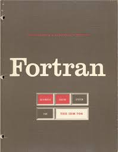
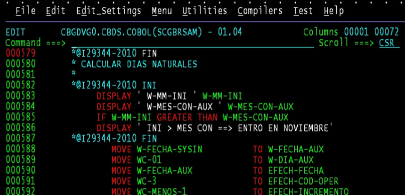
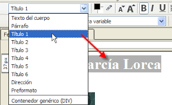
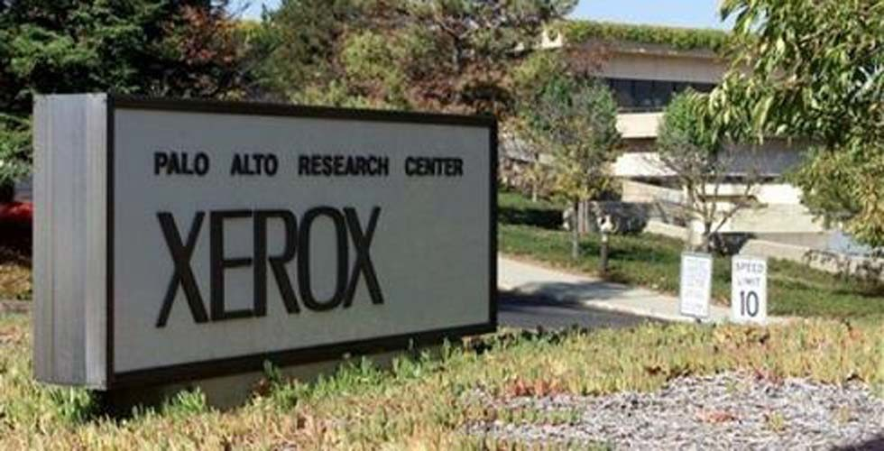

1946
Nacimiento de las computadoras ENIAC

No fue un modelo de producción, sino una
máquina experimental. Tampoco era
programable en el sentido actual. Se trataba
de un enorme aparato que ocupaba todo un
sótano en la universidad. Construida con 18.
000 tubos de vacío, consumía varios kW de
potencia eléctrica y pesaba 30 toneladas. Era
capaz de efectuar cinco mil sumas por
segundo. Fue hecha por un equipo de
ingenieros y científicos encabezados por los
doctores John W. Mauchly y J. Presper
Eckert en la universidad de Pensilvania, en
los Estados Unidos.

Lenguaje diseñado específicamente para uso
científico. Su nombre proviene del inglés
Formula-Translator, o traductor de fórmulas.

Con el objetivo de crear un lenguaje de
programación universal que pudiera ser
usado en cualquier PC nace COBOL.

Se crea ARPANET exclusivamente de uso
militar, con el objetivo de un ataque ruso, se
pudiera tener acceso a la información militar
desde cualquier punto del país.
1970
Primeras Hojas de Estilo

Las hojas de estilos aparecieron poco
después que el lenguaje de etiquetas SGML
Desde la creación de SGML, se observó la
necesidad de definir un mecanismo que
permitiera aplicar de forma consistente
diferentes estilos a los documentos
electrónicos,l gran impulso de los lenguajes
de hojas de estilos se produjo con el boom
de Internet y el crecimiento exponencial del
lenguaje HTML para la creación de
documentos electrónicos.
1972
Nacimiento del InterNetworking Working Group
Organización encargada de administrar
Internet.

Xerox Alto fue el primer ordenador personal,
así como el primero que utilizó la metáfora
de escritorio y una interfaz gráfica de
usuario.